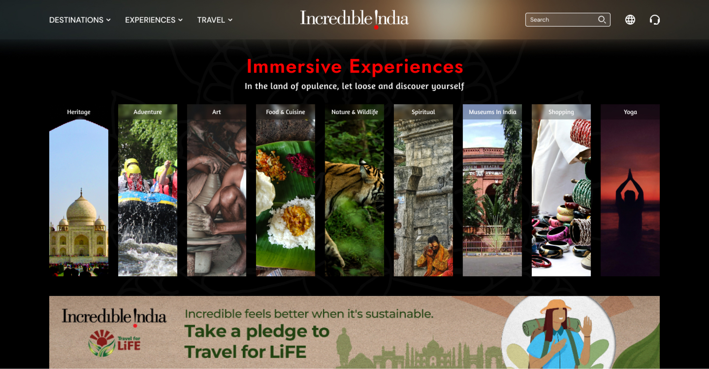
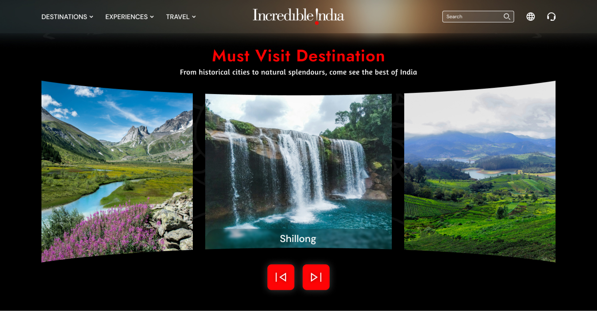

Revolutionizing the Incredible India Website: A Personal Freelance Journey. As a UI/UX designer, I've meticulously redesigned the Incredible India official website as part of my portfolio, driven solely by passion and creativity. Integrating captivating parallax effects, a vibrant color palette of red, black, and white, along with innovative animations, I've crafted an immersive user experience. This project is a testament to my dedication to pushing design boundaries and enhancing digital landscapes, showcasing my expertise and vision in the realm of UI/UX design.

Split Screen Animation with Logo: The split-screen animation introduces the website with flair, showcasing the Incredible India logo in a dynamic manner. This attention-grabbing feature sets the tone for an engaging user experience, immediately capturing the visitor's interest and inviting them to explore further.
Hero Section with Background Video: The hero section serves as a visual gateway to India's diverse landscapes and culture. With a captivating background video, it immerses visitors in anatmospheric journey, enticing them to discover the beauty and allure of the country.
Must-Visit Places with 3D Design and Parallax Effects: Through innovative 3D design and parallax effects, the "Must-Visit Places" section offers a captivating virtual tour of India's top attractions. High-definition images enhance the visual appeal, allowing visitors to immerse themselves in the beauty of each destination.
Explore Before You Visit Section with Unique Cards Carousel: The "Explore Before You Visit" section revolutionizes travel planning with a unique card carousel. Visitors can seamlessly navigate through curated content, gaining insights into India's ancient landmarks and cultural treasures before embarking on their journey.
Immersive Experience Section: Delving deeper into India's culture and heritage, the immersive experience section captivates users with interactive elements and captivating animations. Hover effects bring content to life, allowing visitors to engage with India's diverse traditions and artistic expressions.
Popular Trips Places with Video Background: Through engaging animations and background videos, the "Popular Trips Places" section sparks wanderlust and inspires travel enthusiasts to explore India's hidden gems. Dynamic visuals provide a glimpse into the country's vibrant landscapes and cultural experiences.
Celebrate with Us Section: Celebrating India's cultural tapestry, the "Celebrate with Us" section introduces new festivals and traditions, fostering a sense of inclusivity and joy. By highlighting diverse celebrations like Diwali and Ram Navami, the section invites visitors to experience the richness of Indian culture firsthand.
Our Incredible Achievements: Showcasing India's accomplishments and contributions to the world, the "Our Incredible Achievements" section employs dynamic hover animations and carousel cards. These interactive elements engage users, highlighting India's progress and innovation across various fields.
Blogs Section: Offering valuable insights and travel tips, the blogs section serves as a resource for curious travelers. Through informative articles and engaging content, visitors can gain deeper insights into India's diverse attractions and cultural experiences.
Footer with New Design and Animation: The footer adds a finishing touch to the website with its fresh design and animated elements. Seamlessly integrated into the user interface, the footer enhances navigation and user experience, ensuring visitors can easily access important information and resources.